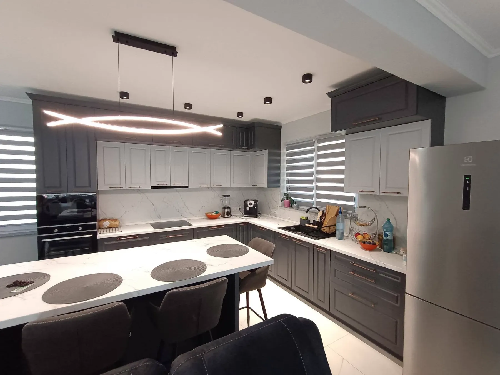
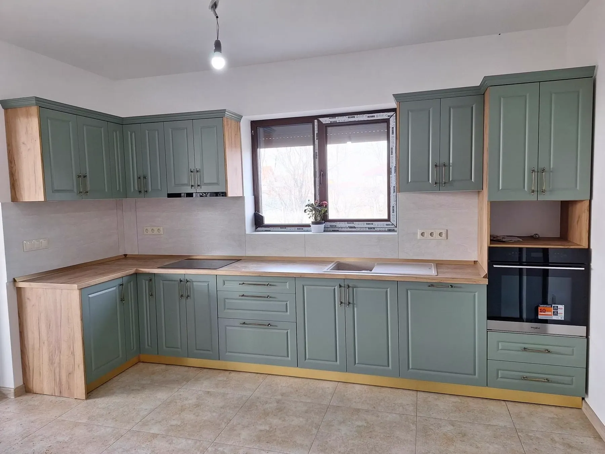
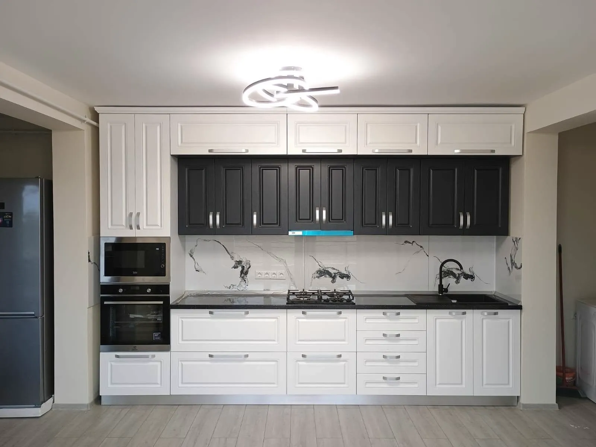
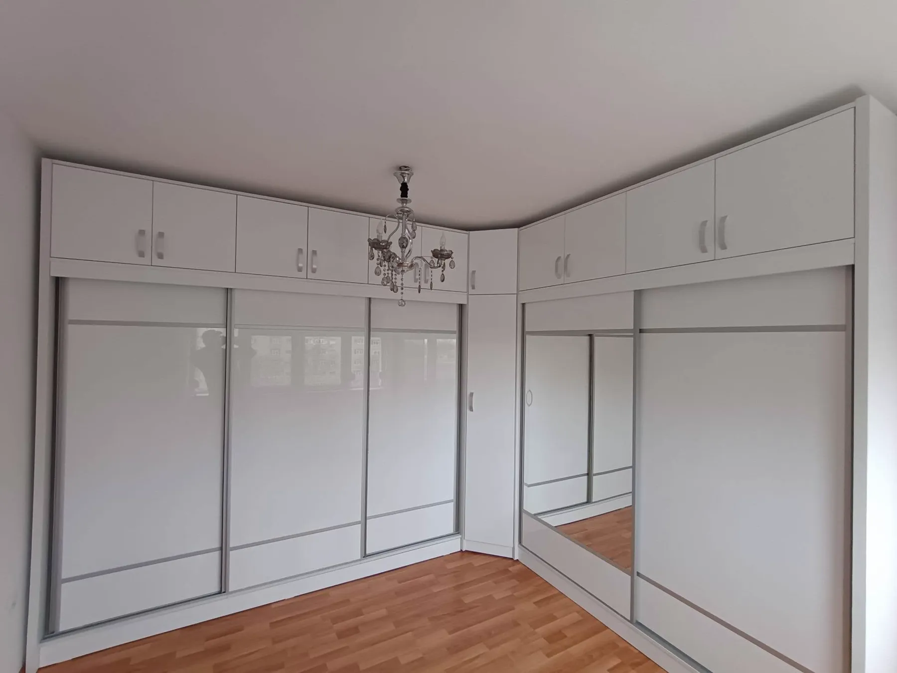
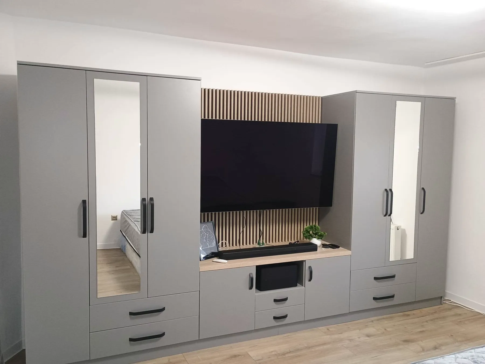
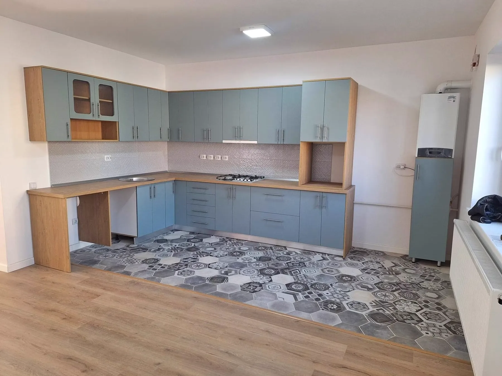
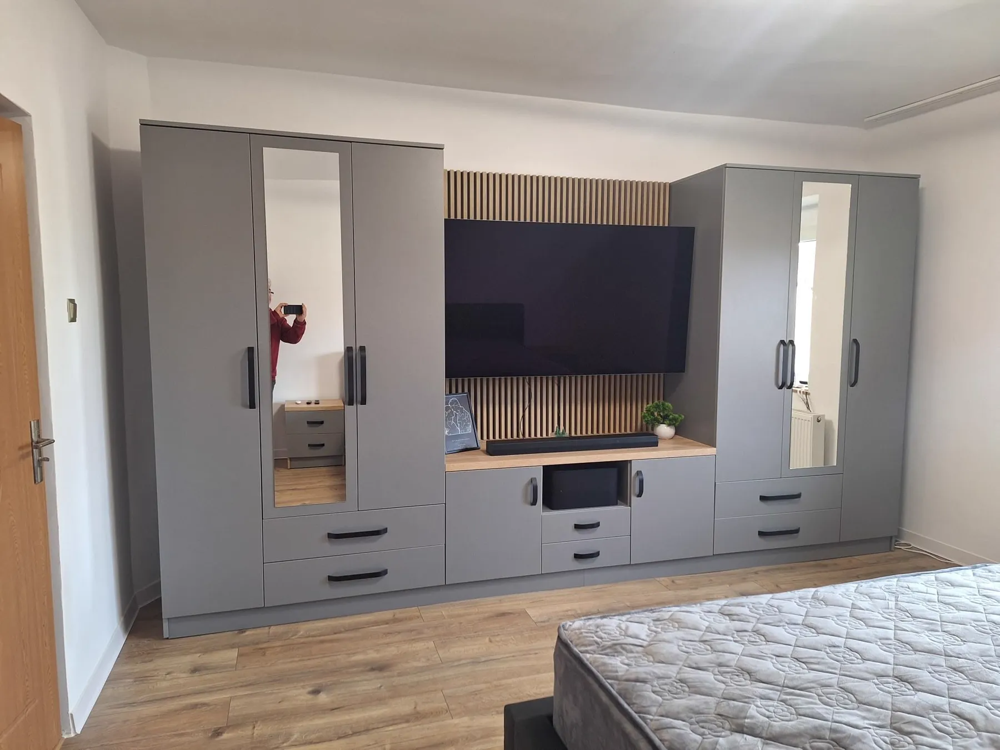
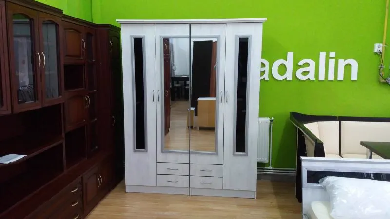
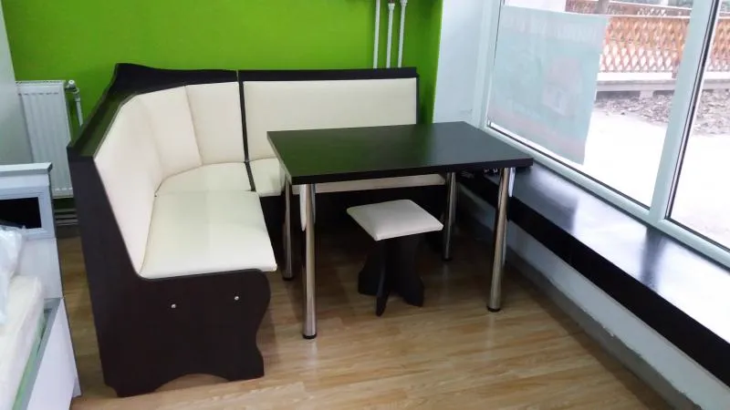

Mobilă la comandă, făcută în atelierul nostru din Satu Mare.
Bucătării, dulapuri și livinguri pe măsura casei tale. Le proiectăm, le facem în atelier și le montăm noi.
Bucătărie cu insulă,
montată la un client
Lucrări montate la clienți.
Fiecare e făcută pe măsura camerei, în culoarea aleasă de client. Pozele sunt de la lucrări montate.






Ți-ar plăcea ceva asemănător? Spune-ne ce cameră ai și te sunăm noi.
Vreau ceva asemănătorDin atelierul nostru.
Mobila o facem la noi în atelier, în Satu Mare, de peste 30 de ani. De la proiect până la montaj, totul se face de noi.
Pe măsura casei tale.
Alegi culoarea, finisajul și cum să arate. Noi o proiectăm pe dimensiunile camerei tale.
Ce facem.
Tot ce ține de mobila de casă, la comandă. În magazin găsești și modele gata făcute.
Bucătării
Pe colț, drepte sau cu insulă, în ce culoare vrei.

Dormitoare și dulapuri
Dulapuri cu uși culisante, cu oglindă, pe toată lățimea camerei.
Living și biblioteci
Mobilă pentru sufragerie, cu loc pentru televizor și rafturi.

Colțare de bucătărie
Colțar cu masă și scaune, în culorile din magazin.
Cum lucrăm.
De la prima discuție până când mobila e montată la tine acasă.
- Consultanță gratuităVii în magazin sau ne suni și ne spui ce ai în minte.
- Proiectare personalizatăFacem proiectul pe dimensiunile camerei tale și alegem împreună culorile.
- Execuție în atelierMobila se face la noi, în Satu Mare.
- Livrare și montajO aducem și o montăm noi.
Ne găsești în două locuri.
Magazinul de pe Careiului
Str. Careiului C12-14, Satu Mare, față în față cu Lebăda. Aici vezi bucătăriile și colțarele expuse.
Cum ajungiCere o ofertă.
Spune-ne ce vrei și cam ce dimensiuni are camera. Te sunăm noi, iar consultanța e gratuită.